Design Review
The overarching theme that came from our feedback was criticism of the fact that our product required user discipline in order to function properly, which is counterintuitive to the question we are answering. Users liked the timer functionality, as well as finding the ability to use emergency features without removing our phone a smart addition. It gave them a sense of security, while also preventing what would be an easy way to remove one’s phone. They worried about other non-emergency situations, such as an important business call or other important messages, to which we either must account for that in some way to respond, or simply must make the user aware of their inability to get their phone when it is put away. Another piece of criticism that was offered was in the case that one accidentally input a time they did not intend, such as accidentally opting for 500 minutes rather than 50. A safeguard that we thought of was requiring the user to input the time twice in a row, guaranteeing a correct choice. This, however, would come at the expense of a guiding principle of our design, being that one must only put their phone away impulsively in order to not be on it for an extended period of time. This idea guided our conversation, with much skepticism coming from some users who believed that those who would use the product would be inclined to put their phones away without it. The primary rebuttal was the fact that many people are able to put their phone away on a whim, but are unable to keep it away. Our product would remove the second step, being the retrieval of one’s phone.
Interview 1
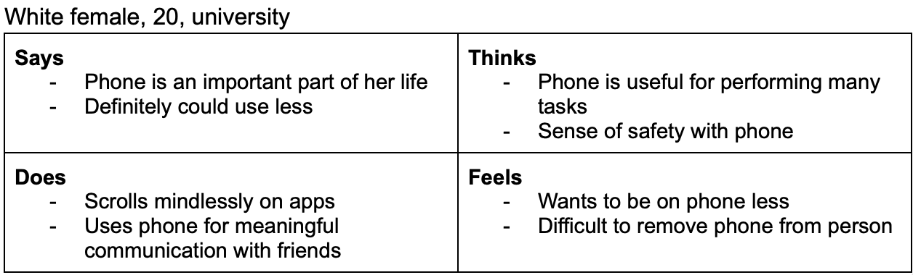 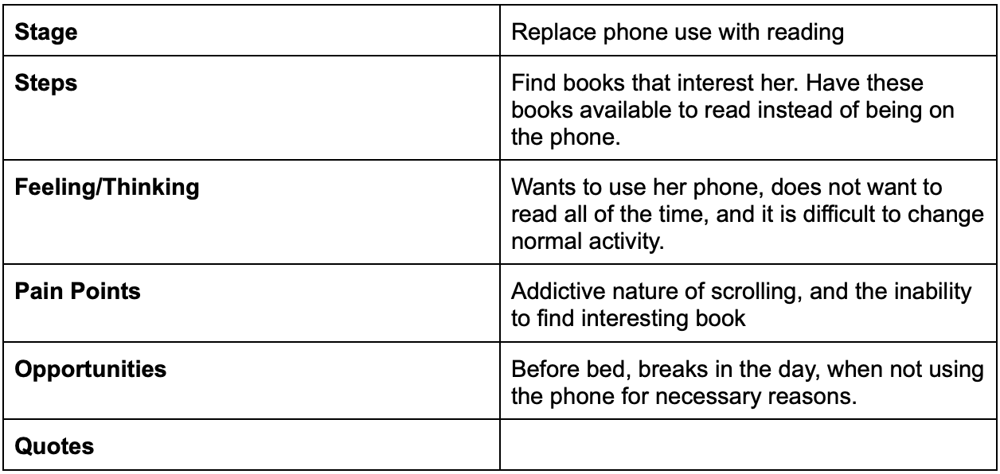 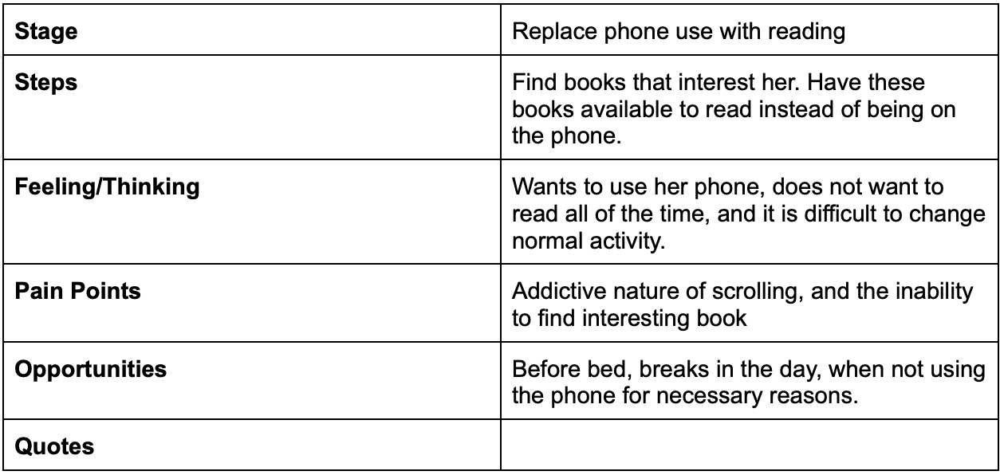Interview 2
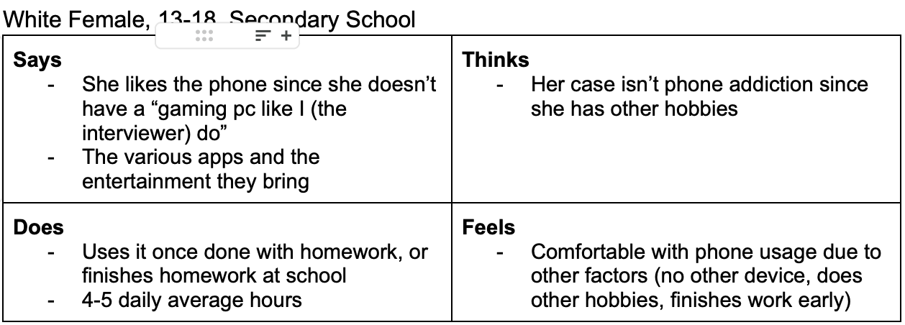 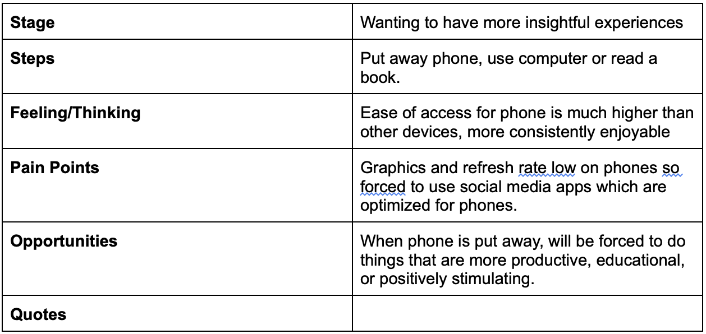
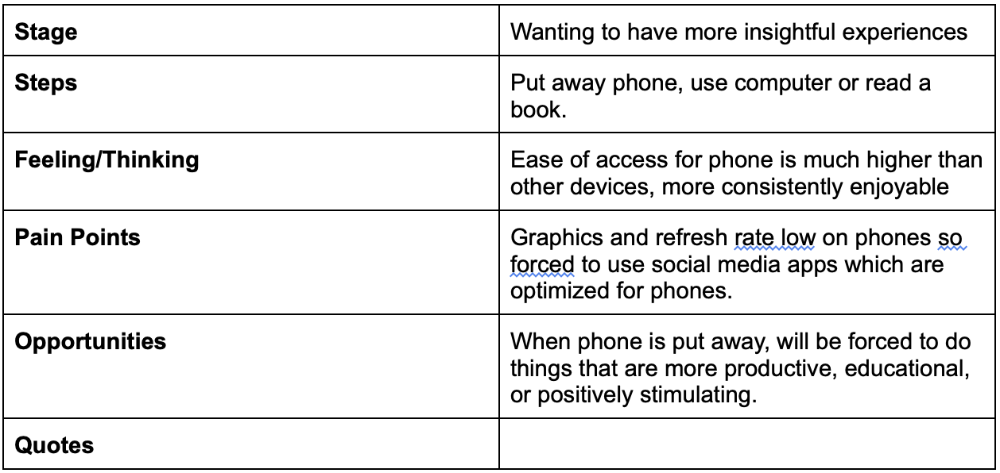
Interview 3
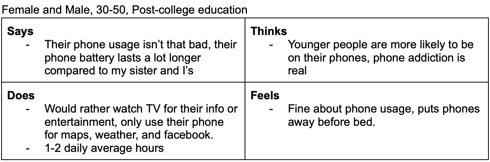 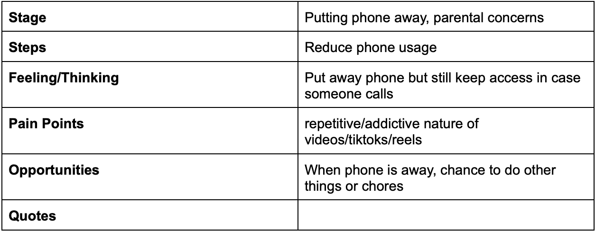
Interview 4
 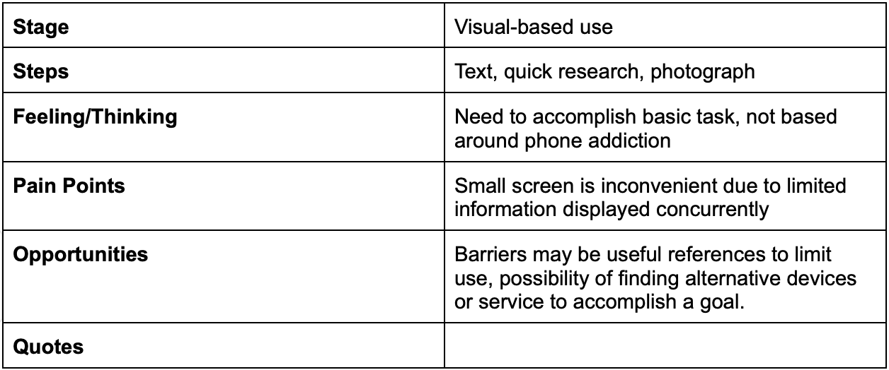
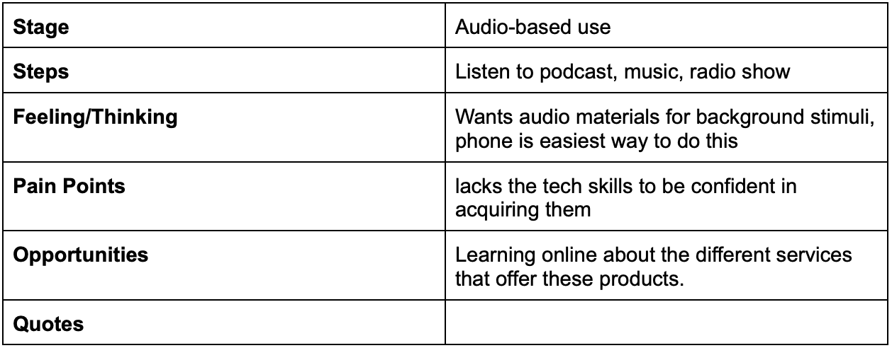
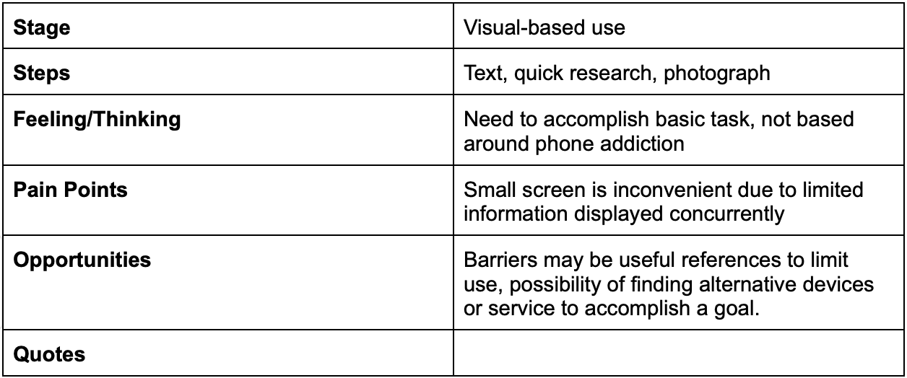
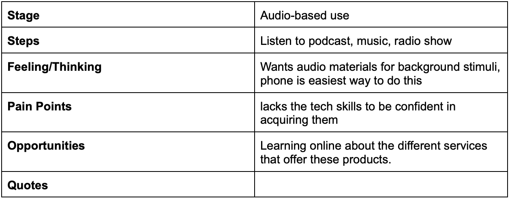
Interview 5
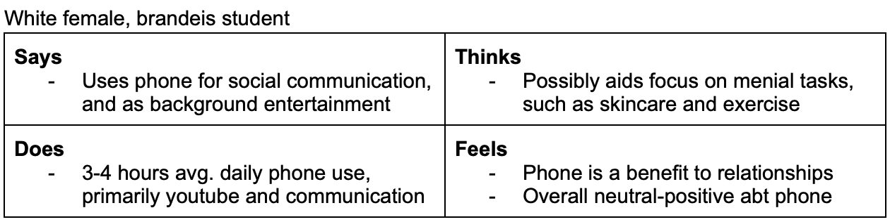 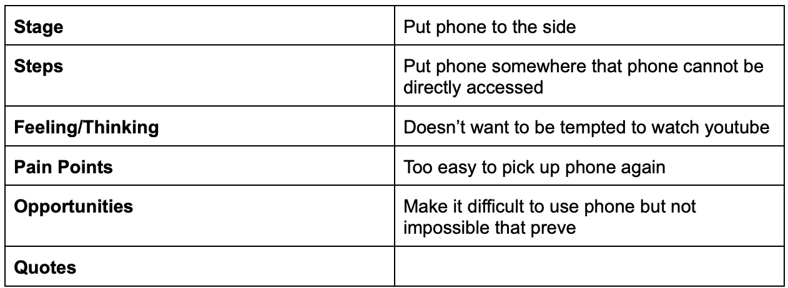
Coming to our Problem Definition
We consolidated and narrowed down our findings from the empathy and journey maps to come up with a problem definition. Our problem definition is as follows: How might we reduce the distracting characteristics of mobile phones?
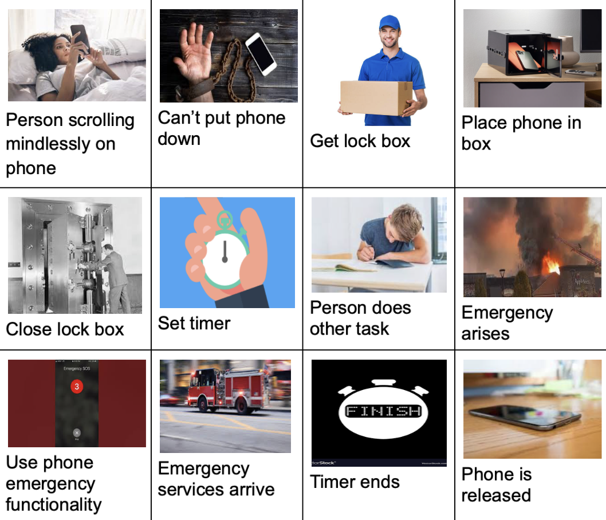Journey Map
We created a storyboard to illustrate the user experience of our solution. The storyboard is a visual representation of the user's journey through the product, from the initial problem of needing to get work done but being too easily drawn back to phone usage and through possible events that could occur while using the produc like an emergency (which the product also had solutions for, like the emergency call function). This will be further validated in the prototyping page.